<!DOCTYPE html>
<html>
  <head>
    <meta charset="utf-8">
    <meta name="viewport" content="initial-scale=1, maximum-scale=1, user-scalable=no, width=device-width">
    <meta http-equiv="Content-Security-Policy" content="default-src *; style-src &apos;self&apos; &apos;unsafe-inline&apos;; script-src &apos;self&apos; &apos;unsafe-inline&apos; &apos;unsafe-eval&apos;">
    <title></title>

    <link href="lib/ionic/css/ionic.css" rel="stylesheet">
    <link href="css/style.css" rel="stylesheet">
    <link href="lib/angular-motion/dist/angular-motion.min.css" rel="stylesheet">
    <link href="lib/angular-motion/dist/modules/collapse.min.css" rel="stylesheet">
    <link href="lib/ionic-filter-bar/dist/ionic.filter.bar.min.css" rel="stylesheet">
    <link href="lib/ionic-nifty-modal/nifty.modal.css" rel="stylesheet">  
    
    <link href="css/ionic.iosButtons.css">
    <link href="css/ionicons.min.css">
    <!-- IF using Sass (run gulp sass first), then uncomment below and remove the CSS includes above
    <link href="css/ionic.app.css" rel="stylesheet"> -->
   
    <!-- ionic/angularjs js -->
    <script src="lib/ionic/js/ionic.bundle.js"></script>
    <script src="lib/moment/moment.js"></script>
    <script src="lib/angular-moment/angular-moment.js"></script>
    <script src="lib/angular-animate/angular-animate.min.js"></script>
    <script src="lib/ionic-toggle-password/dist/ion-toggle-password.min.js"></script>
    <script src="lib/ionic-filter-bar/dist/ionic.filter.bar.min.js"></script>
    <script src="lib/ionic-ion-swipe-cards/ionic.swipecards.js"></script>
    <!-- cordova script (this will be a 404 during development) -->
    <script src="js/ng-cordova.min.js"></script>
    <script src="cordova.js"></script>
    <!-- ng-matrial-floating-button -->
    <script src="lib/ng-material-floating-button/src/mfb-directive.js"></script>
    <!-- your app's js -->
    <script src="js/app.js"></script>
    <script src="js/controllers.js"></script>
    <script src="js/services.js"></script>
    
    
  </head>
  <body ng-app="brainApp" animation="slide-left-right-ios7" ng-controller="MainCtrl">
    <!--
      The nav bar that will be updated as we navigate between views.
    -->
    <ion-nav-bar class="bar bar-positive nav-title-slide-ios7" type="bar-default" back-button-type="button-icon" back-button-icon="icon ion-arrow-left-c">
    </ion-nav-bar>
    <!--
      The views will be rendered in the <ion-nav-view> directive below
      Templates are in the /templates folder (but you could also
      have templates inline in this html file if you'd like).
    -->
    <ion-nav-view></ion-nav-view>
    
    <script id="intro.html" type="text/ng-template"> 
      <ion-view view-title="{{navTitle}}">
          <ion-nav-buttons side="left">

          <button class="button icon-left-side button-clear button-balanced"
                  ng-click="previous()" ng-show="slideIndex > 0">
              <i class="icon "></i>
          </button>
        </ion-nav-buttons>
        <ion-nav-buttons side="right"> 
          <button class="button icon-right-side button-clear button-balanced"
                  ng-click="next()" ng-show="slideIndex != 4">
            
          </button>
          <button class="button button-outline button-balanced"
                  ng-click="startApp()" ng-show="slideIndex == 4">
            Accept
          </button>
        </ion-nav-buttons>
        <ion-slide-box on-slide-changed="slideChanged(index)">
          <ion-slide>
           
             
  
          </ion-slide>
          <ion-slide>
           
             
  
          </ion-slide>
          <ion-slide>
           
             
  
          </ion-slide>
          <ion-slide>

             

          </ion-slide>
          <ion-slide>
            <a class="" href="" onclick="window.open('https://www.brainline.com/legal/', '_system', 'location=yes'); return false;"></a>
          </ion-slide>
        </ion-slide-box>
        
      </ion-view>
    </script>

    <script id="contents.html" type="text/ng-template"> 
      <ion-modal-view class="ion-nifty-modal">
        <div class="ion-modal-content-custom">
          <ion-content class="padding">
            <button class="button button-full button-positive" ng-click="closeModal()">Close Modal</button>
          </ion-content>
        </div>
      </ion-modal-view>
    </script>

    <script id="templates/event-menu.html" type="text/ng-template">
      
     <ion-side-menus>

        <ion-side-menu-content>
          <ion-nav-bar class="bar-positive">
            <ion-nav-back-button class="button-clear">
              <i class="icon ion-ios7-arrow-back"></i>
            </ion-nav-back-button>
            
          </ion-nav-bar>

          <ion-nav-view name="menuContent"></ion-nav-view>
        </ion-side-menu-content> 

        <ion-side-menu expose-aside-when="large" side="left">
          <ion-header-bar class="bar-positive">
            <h1 class="title">Menu</h1>
          </ion-header-bar>
          <ion-content>
            <ul class="list">
              <!-- Note each link has the 'menu-close' attribute so the menu auto closes when clicking on one of these links -->
              <button class="item item-icon-left button-full text-left" menu-close ng-click="subjects()"><i class="icon balanced icon-subjects"></i>Subjects</button>
              <a href="#/menu/about" class="item item-icon-left" menu-close><i class="icon balanced icon-info"></i>About</a>
              <a href="#/menu/legal" class="item item-icon-left" onclick="window.open('https://www.brainline.com/legal/', '_system', 'location=yes'); return false;" menu-close><i class="icon balanced icon-legal"></i>Legal</a>
              <button class="item item-icon-left button-full text-left" ng-click="showAlert()"><i class="icon balanced icon-rate"></i>Rate brainApp</button>
              <a href="#/menu/faq" class="item item-icon-left" menu-close><i class="icon balanced icon-faq"></i>FAQ</a>
              <a href="#/menu/radio" class="item item-icon-left" menu-close><i class="icon balanced icon-radio"></i>brainOnAIR</a>
              <button class="item item-icon-left button-full text-left" menu-close ng-click="logout()"><i class="icon balanced icon-logout"></i>Log Out</button>
            </ul>
            <div class="assertive">
                <b ng-bind="appVersion"></b>  
            </div>
          </ion-content>
        </ion-side-menu>

      </ion-side-menus>
    </script>
    
    <script id="templates/about.html" type="text/ng-template">
      <ion-view view-title="{{navTitle}}">
        <ion-nav-buttons side="left">
              <button class="button button-icon button-clear ion-navicon" menu-toggle="left" ng-hide="$exposeAside.active">
              </button>
            </ion-nav-buttons>
            <div class="bar bar-subheader bar-positive">
              <h3 class="light">About BrainApp</h3>
          </div>
        <ion-content>
          <div class="card">
            <div class="item item-text-wrap">
              This is a basic Card which contains an item that has wrapping text.
            </div>
          </div>
          <div class="list">

            <a class="item item-icon-left" href="#">
              <i class="icon positive icon-facebook"></i>
              Follow us on Facebook
            </a>

            <a class="item item-icon-left" href="#">
              <i class="icon calm icon-twitter"></i>
              Follow us on twitter
            </a>
          </div>
        </ion-content>
      </ion-view>
    </script>
    
    <script id="templates/legal.html" type="text/ng-template">
      <ion-view view-title="{{navTitle}}">
        <ion-nav-buttons side="left">
              <button class="button button-icon button-clear ion-navicon" menu-toggle="left" ng-hide="$exposeAside.active">
              </button>
            </ion-nav-buttons>
            <div class="bar bar-subheader bar-positive">
                <h3 class="light">Legal </h3>
            </div>
        <ion-content>
          
        </ion-content>
      </ion-view>
    </script>
    
    <script id="templates/faq.html" type="text/ng-template">
      <ion-view view-title="{{navTitle}}">
        <ion-nav-buttons side="left">
              <button class="button button-icon button-clear ion-navicon" menu-toggle="left" ng-hide="$exposeAside.active">
              </button>
            </ion-nav-buttons>
            <div class="bar bar-subheader bar-positive">
              <h3 class="light">FAQ</h3>
          </div>
        <ion-content>
          
        </ion-content>
      </ion-view>
    </script>
    
    <script id="templates/radio.html" type="text/ng-template">
      <ion-view view-title="{{navTitle}}">
        <ion-nav-buttons side="left">
              <button class="button button-icon button-clear ion-navicon" menu-toggle="left" ng-hide="$exposeAside.active">
              </button>
        </ion-nav-buttons>
        <div class="bar bar-subheader bar-positive">
            <h3 class="light">BrainONAIR</h3>
        </div>
        <ion-content>
          <h3 style="text-align: center;"><span style="color: #ff0000;">Listen live below:</span></h3>
          
        </ion-content>
      </ion-view>
    </script>
    
    <script id="activating.html" type="text/ng-template">
        <ion-spinner icon="lines" class="spinner-android"></ion-spinner>
        <p>Activating Account...</p>
    </script>
    
    <script id="logging.html" type="text/ng-template">
        <ion-spinner icon="lines" class="spinner-android"></ion-spinner>
        <p>Signing in...</p>
    </script>
    
    <script id="subjects.html" type="text/ng-template">
        <ion-spinner icon="lines" class="spinner-android"></ion-spinner>
        <p>Loading Subjects list...</p>
    </script>
    
    <script id="loading.html" type="text/ng-template">
        <ion-spinner icon="lines" class="spinner-android"></ion-spinner>
        <p>Loading...</p>
    </script>
    
    <script id="checking.html" type="text/ng-template">
        <ion-spinner icon="lines" class="spinner-android"></ion-spinner>
        <p>Checking if user already exist...</p>
    </script>
    
    <script id="delete.html" type="text/ng-template">
        <ion-spinner icon="lines" class="spinner-android"></ion-spinner>
        <p>Deleting user...</p>
    </script>
  </body>
</html>
